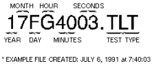
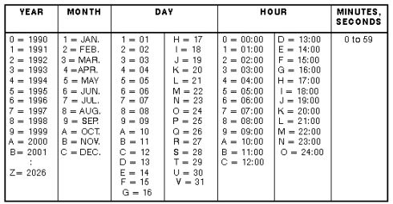
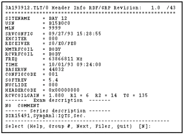
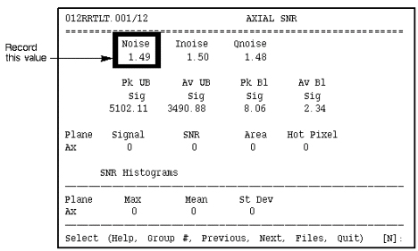
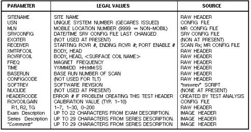

Operating Documentation
Direction 5133330-3, Rev# 14
Signa EXCITE HD 3.0T Service Methods
Module Version 1.0, Version Date 5/15/07
Operating Documentation |
Top Level Test (TLT) results are viewed (both graphics and text) using the [Report Manager] Tool located on the Service Desktop under [Utilities].
See Illustration 1 below for an example file name. Refer to Illustration 2 for data file naming convention.
Illustration 1: EXAMPLE TLT FILE NAME

Illustration 2: DATA FILE NAMING CONVENTION

Example TLT Report Screens:
The following screens contain example TLT Body test results displayed by the PCReport Tool:
Scan Header - Screen 1.
Illustration 3: SCAN HEADER

SNR (noise-only scan) - Screen.
Illustration 4: SNR (NOISE ONLY SCAN)

Refer to Illustration 5 below for a description of the items on the Header Parameters screen.
Illustration 5: REPORT "HEADER INFO" SCREEN PARAMETERS
